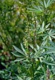
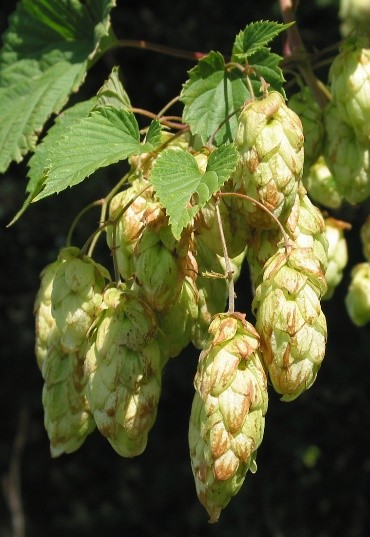

|

Корневая система стержневая. Стебли прямостоячие, ребристые. Листья супротивные, рассечённые на 3-10 сегментов,
зубчатые — растение двудомное. Мужские соцветия — метельчатые, кистевидные, находятся на вершине стебля. Женские — одноцветковые,
собранные в соцветия в пазухах верхних листьев. Плод — яйцевидный, сдавленный орешек мраморно-бурого цвета; средняя длина орешков — до 4 мм,
ширина — до 3 мм, масса каждого — в диапазоне 0,012—0,025 г. Орешки сорной конопли по сравнению с культурной более мелкие,
легко осыпаются и засоряют почву. В год созревания семена не прорастают, после перезимовки дружно всходят. Жизнеспособность
сохраняется от 2 до 40 лет. Лучшая всхожесть семян наблюдается с глубины 2—5 см. Семядоли длиной до 10 мм, шириной до 5 мм,
обратнояйцевидные, сидячие, покрытые мелкими волосками.
Фотограф: Марина Скотникова |

Средней высоты многолетняя травянистая вьющаяся лиана, длиной 5-7 м, в природе использующая в качестве опоры ветви кустарников и
стволы деревьев. Хотя вся ее надземная часть на зиму отмирает, тем не менее, хорошо заметна и может попасться при изучении флоры.
Стебель слегка гранистый от нескольких рядов очень мелких и туповатых шипиков, не заметных глазом, но хорошо ощутимых на ощупь.
Листовые рубцы округлые и супротивно расположенные с 1 листовым следом. Почек нет, но зато часто сохраняются небольшие прилистники.
Растение двудомное. Мужские цветки собраны в пазушные метельчатые соцветия; женские — в головчатые соцветия. Цветение в июне-июле.
Плоды — орешки, покрытые разросшимися кроющими листьями женских соцветий и образующие таким образом «шишки». Семена созревают в сентябре.
Хмель легко размножается вегетативным путем, а также возможно семенное размножение.
Фотограф: Илья Михеев |